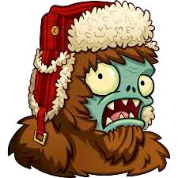

los bosses


Los Bosses o Jefes son seres muy poderosos del universo de plantas vs zombis, destacan por su vida y su extraordinario poder el cual es capaz de derrotal al jugador muy facil



Los Bosses o Jefes esepciales son seres muy poderosos del universo de plantas vs zombis, similares a los bosses normales pero cuentan con habilades mejores, ya se defencivas o ofensivas y no queras meterte con ellos


Los Bosses o Jefes plantas son los lideres del bando de las plantas ya que son los mas grandes y fuertes de todos